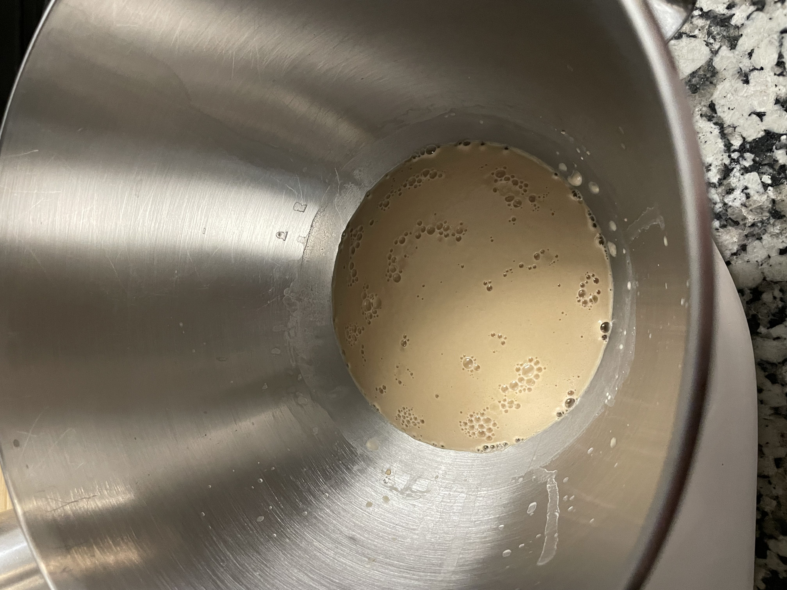

This a picture story and guide on how to bake delicious pretzels at home, saving you money compared to buying them at the store. To start, gather bread flour, salt, softened butter, yeast, dark-brown sugar and a source for warm (not hot) water

In a bowl, half a cup of water and a packet of yeast along with a tablespoon of dark-brown sugar are whisked together. This mixture should sit for a few minutes before continuing, .
Next, the special ingredient: a pilsner-style beer. Top shelf is not important here, just use something you’d drink. Add about a half cup to the mixer and combine with 560 grams of flour until a dough ball forms, .
Mix for about 5-7 minutes on medium, just until a clean ball forms. The dough will be tacky but should maintain its shape, .
Set in a greased bowl (butter preferred) and set in a warm place for 1-2 hours, until doubled in size. The dough should bounce back from a light poke once sufficiently risen, .
Punch dough out onto a lightly-floured cutting board and flatten into a uniform sheet. If the dough is tough, let it sit for a few minutes for the gluten to relax, .
In my case, I measure out 20 gram chunks of dough and roll into nuggets, but here you can deviate and make whatever shape you would like. After shaping, let the dough rest under a wet towel or plastic wrap until puffed (about 20 minutes).
Preheat your oven to 500 degrees Fahrenheit. In a pot combine water and baking soda in a 3:1 ratio, or if you have it, food grade lye according to the bottle. Lye is what real bakeries will use. Bring the mixture to a boil and cook the pretzels in the bath for about 30 seconds. .
Place boiled dough onto a baking sheet, salt and score the dough. Place in the oven for 10-15 minutes. .
Depending on the oven, it could take longer or shorter, but bake until a deep brown color appears, this means the outer skin of the pretzels has fully cooked. Serve with mustard or a garlic butter..